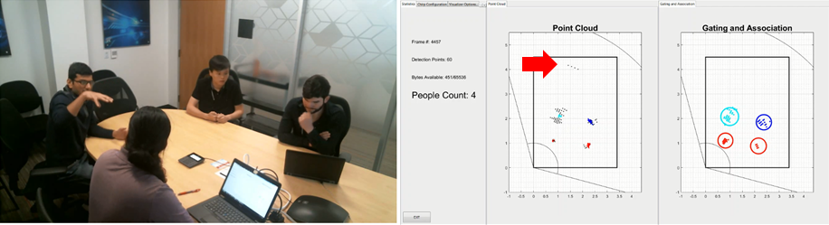

Updated for IWR6843 ISK
Introduction
This use case provides the sensing configuration People Tracking and Counting Radar which is typically mounted on a wall in the areas like Conference room, Office space, Hallway etc to detect People and track their position. This use case is based on People Tracking and Counting Reference Design Using mmWave Radar Sensor and the reader is encouraged to visit the TI Design Webpage for more details.


System Parameters and Chirp Configuration
After the chirp configuration for the particular range, range resolution, velocity, and velocity resolution is arrived at, the tracker customization/tuning needs to be done. For more details on the customization, please refer to the People counting customization guide.
Given below are five example chirp configurations designed and tuned for the environments like Conference room, Office space with Cubicles and aisles, elevators, a hall-way, and outdoors. Each configuration has had Scenery parameter changes to properly define the environment. Other parameters, such as the cumulative SNR threshold and the point threshold, have been tuned to better detect people based on the characteristics of the expected point cloud in the target environment. These would enable customers to get to the desired demo very quickly. However, these may still require tuning for optimal performance in your environment.
Chirp 5 must be used with the Traffic Monitoring Demo Firmware for Optimal Performance.:
- Load the Traffic Monitoring Demo Firmware onto the device with Uniflash. The firmware can be found at
\labs\lab0013_traffic_monitoring_16xx\prebuilt_binaries\traffic_monitoring_16xx_lab.bin - Use the People Counting GUI to interface with the device. This is found at
\labs\lab0011-pplcount\lab0011_pplcount_quickstart\pplcount_gui.exe - Use the GUI to select and load the long range configuration.
- Press the Launch Button
Parameter | Case-1, 6m (MIMO), Conference Room | Case-2, 5m (MIMO), Elevator | Case-2, 14m (MIMO), Office Space | Case-4, 14m (MIMO), Hallway | Case 5, 50m (MIMO) Outdoor |
Device Type | IWR1642 | IWR1642 | IWR1642 | IWR1642 | IWR1642 |
Maximum range (m) | 5.6 | 5.6 | 14 | 14 | 50 |
Range resolution (m) | 0.049 | 0.049 | 0.12 | 0.12 | 0.49 |
Maximum velocity (km/h) | 19.057 | 19.057 | 18.9 | 18.9 | 28.06 |
Velocity resolution (km/h) | 0.297 | 0.297 | 0.297 | 0.297 | 0.449 |
Total Sweep Bandwidth (MHz) | 3061.22 | 3720 | 1250 | 1250 | 361.3 |
Update rate (Hz) | 20 | 20 | 20 | 20 | 30 |
Radar Cube Size (KB) | 512 | 512 | 512 | 512 | 512 |
| Processing Chain | People Counting | People Counting | People Counting | People Counting | Traffic Monitoring |
| Chirp Configuration File | mmw_PC_elevator.cfg | mmw_PC_14m_OfficeSpace.cfg | mmw_PC_14m_Hallway.cfg |
Chirps for the IWR6843 ISK are below. Chirp 2 must be used with the Long Range People Counting and Detection Lab.
| Parameter | Chirp 1, 6m | Chirp 2, 50m (IPNC) |
|---|---|---|
| Device Type | IWR6843 ISK | IWR6843 ISK |
| Maximum range (m) | 6.3 | 50 |
| Range resolution (m) | 0.055 | 0.49 |
| Maximum velocity (km/h) | 23.6 | 28.37 |
| Velocity resolution (km/h) | 0.36 | 0.45 |
| Total Sweep Bandwidth (MHz) | 2713.6 | 300 |
| Update rate (Hz) | 20 | 33 |
| Radar Cube Size (KB) | 512 | 512 |
| Processing Chain | People Counting | Long Range People Counting and Detection |
| Chirp Configuration File | mmw_pplcount_demo_default.cfg | long_range_people_counting.cfg |
Assumptions and Miscellaneous Information
System Level Assumptions | ||
Starting frequency (GHz) | 77 | 60 |
TX Antenna Gain (dB) | 8 | 8 |
RX Antenna Gain (dB) | 8 | 8 |
Device Type | IWR1642 | IWR6843 |
Number of TX Antennas used | 2 | 2 |
Number of RX Antennas used | 4 | 4 |
Testing and Results
For details on Test Setup and Results, please refer to the Testing and Results section of the Design Guide for the People Tracking and Counting Reference Design.